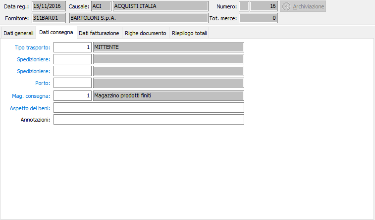

Dati consegna
La sezione video dati di consegna consente l’inserimento delle istruzioni di consegna.

TIPO TRASPORTO: codice numerico presente nella tabella tipi di trasporto per definire le modalità di trasporto. Viene proposto, se presente, il codice esistente in anagrafica del fornitore. Sul campo sono attive le funzioni di ricerca (F9) ed accesso rapido alla tabella (CTRL+W).
SPEDIZIONIERE 1: eventuale codice del primo spedizioniere, in caso di trasporto a mezzo vettore. Viene proposto, se presente, il codice esistente in anagrafica del fornitore. Sul campo sono attive le funzioni di ricerca (F9) ed accesso rapido alla tabella (CTRL+W).
SPEDIZIONIERE 2: eventuale codice del primo spedizioniere, in caso di trasporto a mezzo vettore. Viene proposto, se presente, il codice esistente in anagrafica del fornitore. Sul campo sono attive le funzioni di ricerca (F9) ed accesso rapido alla tabella (CTRL+W).
CODICE PORTO: eventuale codice delle modalità di porto. Viene proposto, se presente, il codice esistente in anagrafica del fornitore. Sul campo sono attive le funzioni di ricerca (F9) ed accesso rapido alla tabella (CTRL+W).
MAGAZZINO CONSEGNA: indica in quale magazzino deve essere consegnata la merce. Sul campo sono attive le funzioni di ricerca (F9) ed accesso rapido alla tabella (CTRL+W).
ASPETTO DEI BENI: campo alfanumerico per l’eventuale descrizione sintetica dell’aspetto dei beni. Sul campo sono attive le funzioni di ricerca (F9) ed accesso rapido alla tabella (CTRL+W).
ANNOTAZIONI: campo alfanumerico per eventuali annotazioni relative al trasporto.